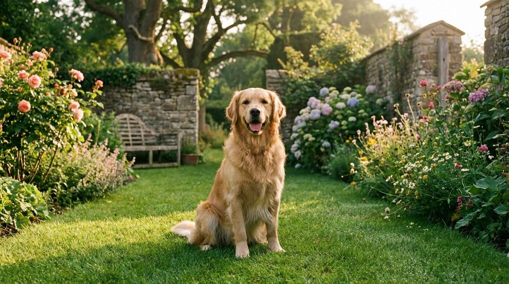
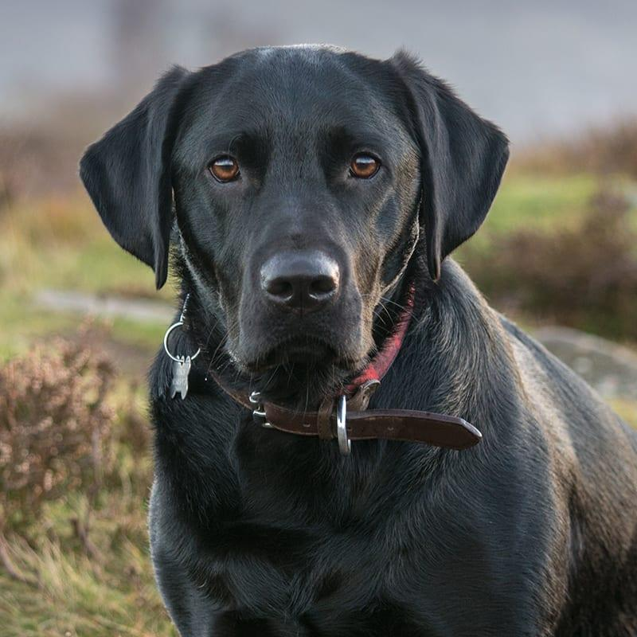
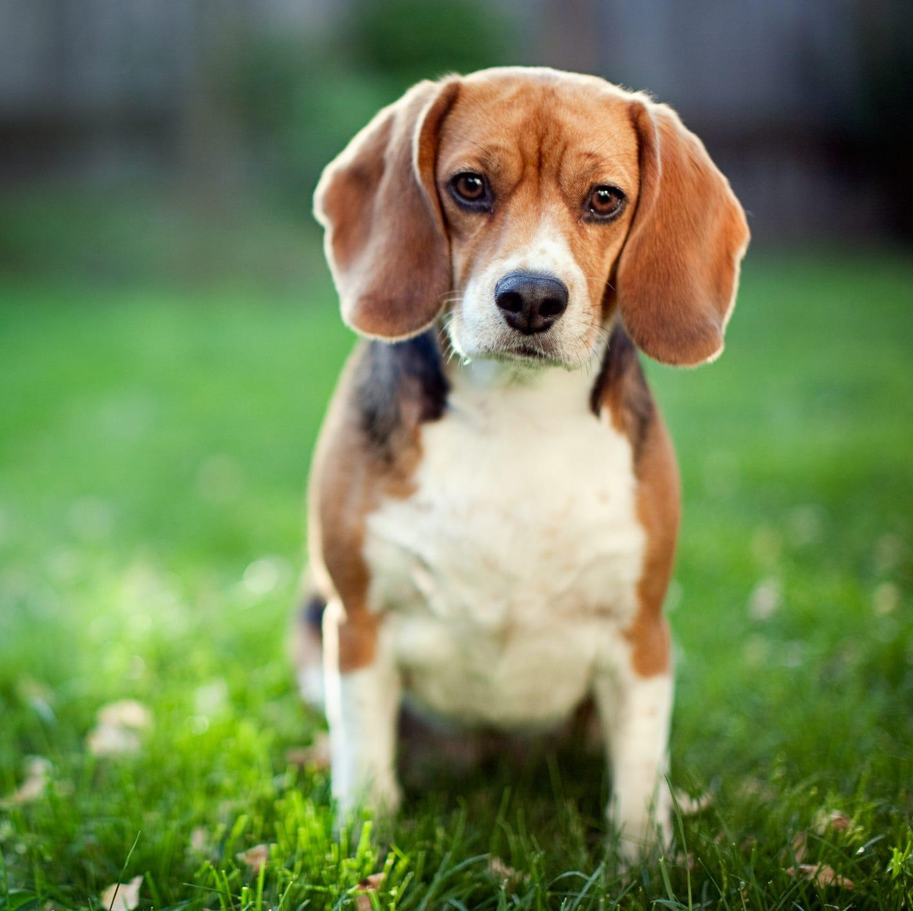
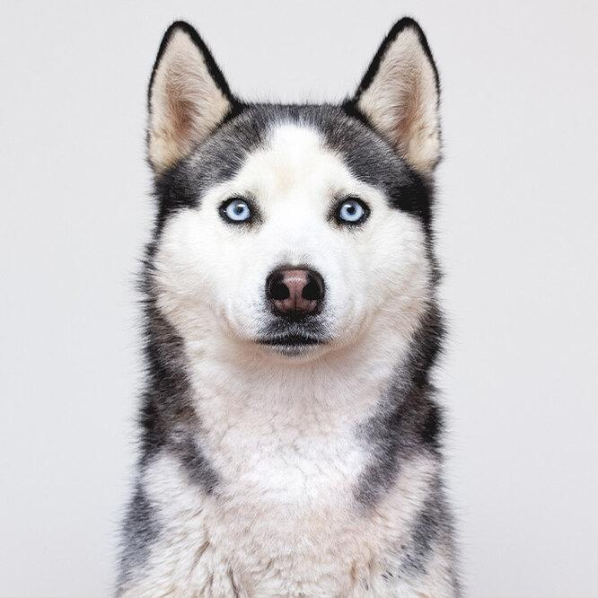
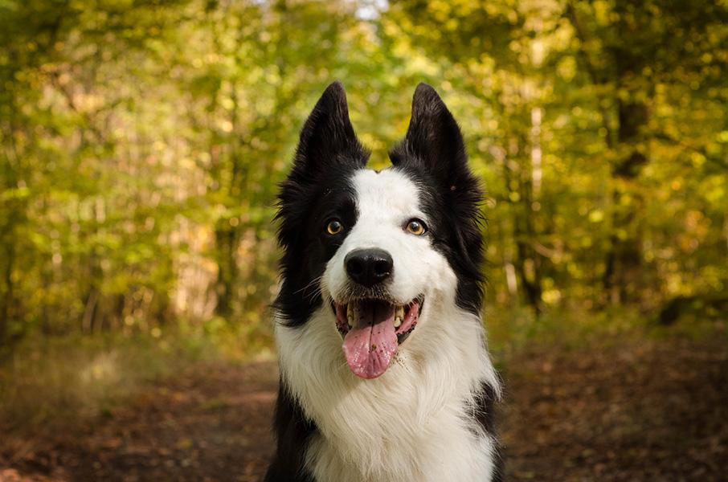
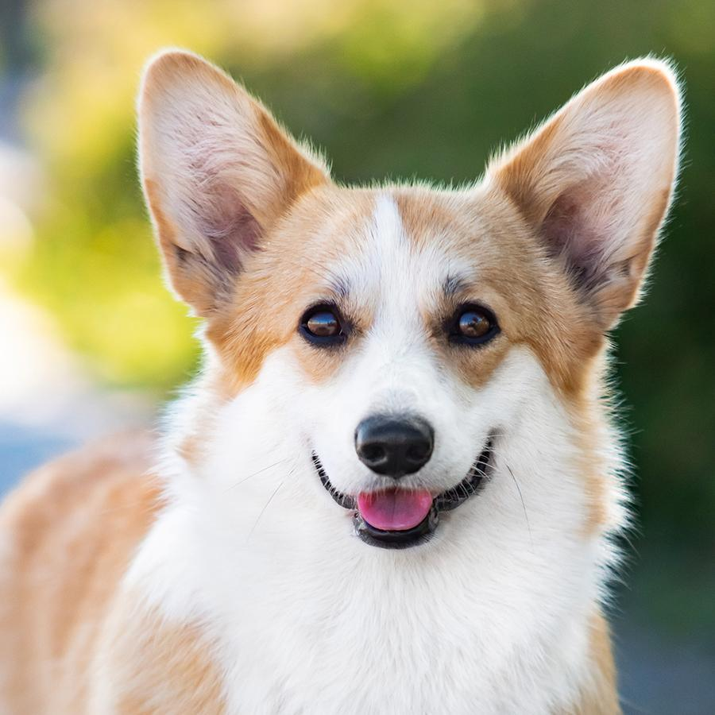
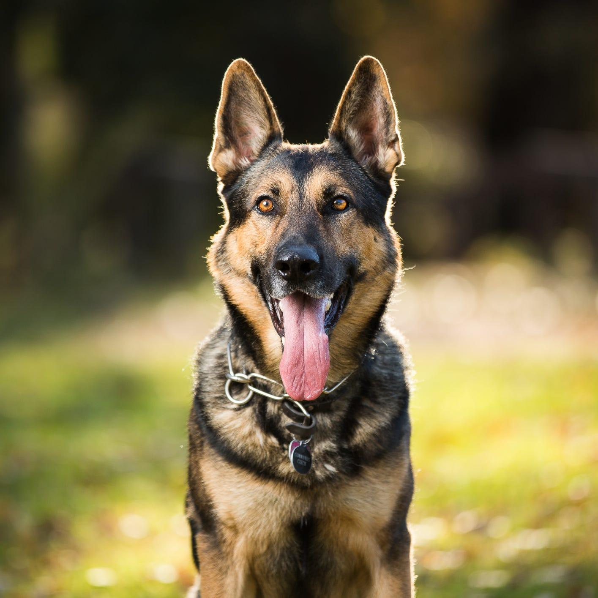
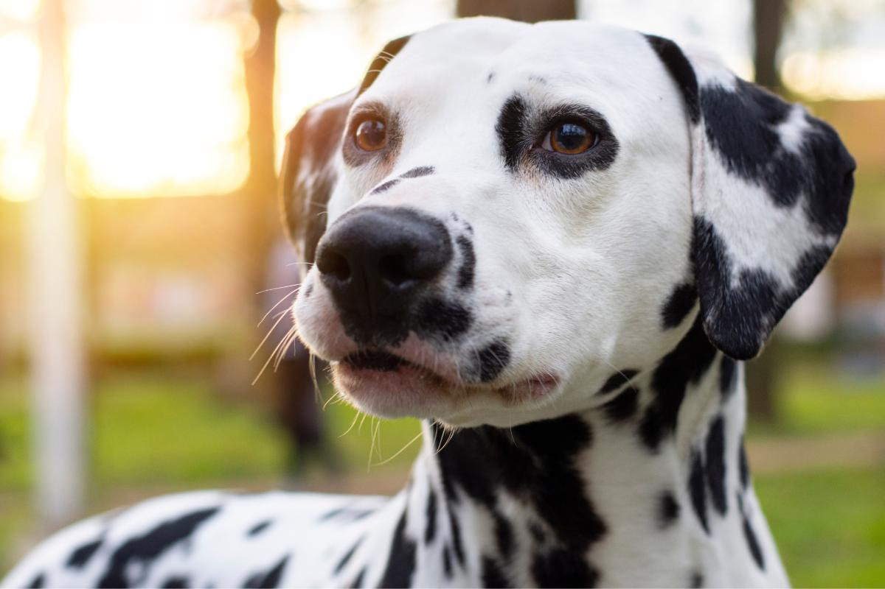
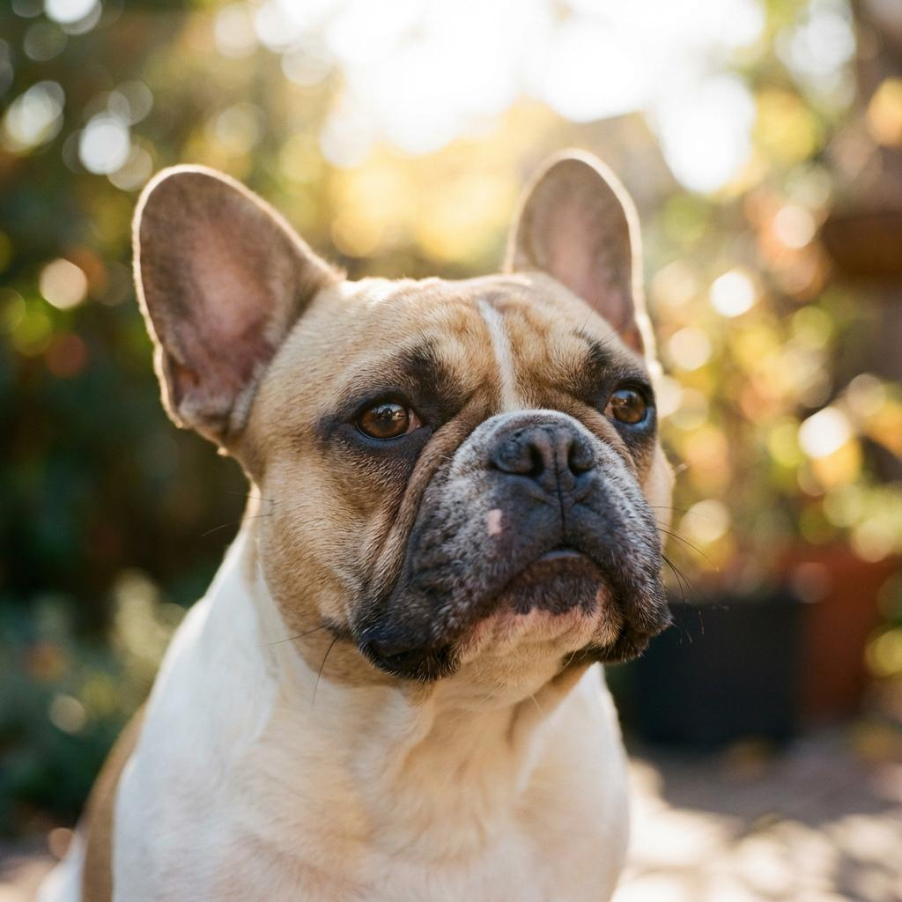

Golden Retriever
Un compañero amigable y lleno de energía.
Mi segunda tarea de Desarrollo Full Stack en Soy Henry.

Un compañero amigable y lleno de energía.

Un perro inteligente, sociable y excelente compañero familiar.

Un perro curioso, alegre y muy sociable. Destaca por su gran sentido del olfato.

Un perro enérgico, resistente y aventurero, conocido por su pelaje y sus llamativos ojos.

Una raza muy inteligente y activa, reconocida por su habilidad para aprender.

Un perro pequeño, juguetón y cariñoso, famoso por sus patas cortas y grandes orejas.

Un perro leal, inteligente y protector, reconocido por su capacidad de entrenamiento.

Una raza activa y amigable, fácilmente reconocible por su pelaje blanco con manchas negras.

Un perro compacto, sociable y juguetón, conocido por sus características orejas erguidas.